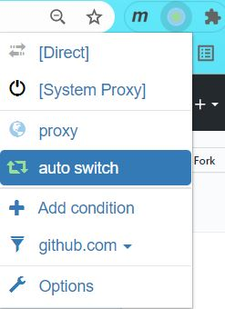
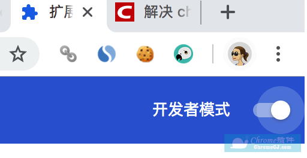
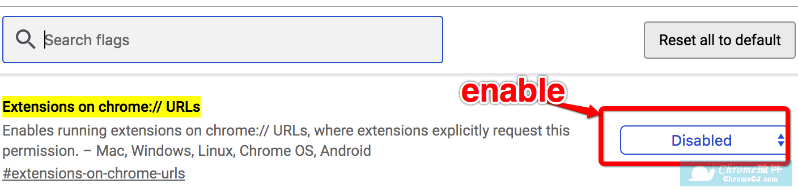

# chrome 插件
# Volume Control 音量控制
volume Control - 音量控制插件是一个通过声音增强器增加音量，并且使用音频控件分别设置每个标签的音量级别的 Chrome 插件。可以对有音频的输出的标签进行快速切换和进行音量管理，最大可以将音量增加到 6 倍.
Volume Control - 音量控制 Chrome 插件的优点:
1、将音量增加到 6 倍 (高达 600％);
2、显示播放音频的所有选项卡；
3、快速导航带有声音的标签；
4、立即静音标签音量 (只需点击弹出菜单中的扬声器图标);
5、在工具栏菜单中的应用程序图标上显示音量级别；
6、简约的设计。
# Proxy SwitchyOmega
Proxy SwitchyOmega 可以设置浏览器访问某些网站所用的 proxy 策略.

# chrome 浏览器添加插件遇到问题
安装从往上下载的后缀名为.crx 的 chrome 插件出现 "程序包无效: CRX_HEADER_INVALID" 的错误解决方法
修改文件格式，加载扩展程序 (亲测有效)
有时候要在 chrome 安装本地插件时，会报错，这时候将插件的后缀名 .crx 改为 .zip 或者 .rar，然后将改好后缀名的文件解压到本地文件夹中，然后在 chrome 的设置 -> 更多工具 -> 扩展程序：
在上图中的加载已解压的扩展程序，找到刚才的解压的扩展程序即可.
如下载的 chrome 插件名为 plugin.crx
将原先的 plugin.crx 改为 plugin.rar，然后将 plugin.rar 文件解压成文件夹 plugin
地址栏输入 chrome://extensions/, -> 将右上开发者模式按钮打开 -> 点击【加载已解压的扩展程序】-> 选择我们刚才解压的 plugin 目录
开启开发者模式
chrome 的设置 -> 更多工具 -> 扩展程序，开启开发者模式

修改参数
首先打开下面地址：chrome://flags/#extensions-on-chrome-urls
将 "Extensions on chrome:// URLs" 的 disabled 改为 enable 重启
